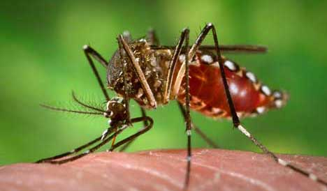

¿En que ambiente se produce el mosquito?
Los mosquitos del dengue se presentan en zonas urbanasu con altitudes inferiores a 2200 metros sobre el nivel del mar, ponen sus huevos en depósitos de agua limpia como albercas, floreros de plantas acuáticas, llantas, baldes de agua y cualquier recipiente que está a la intemperie y que puede almacenar agua.
¿Cuales son los sintomas del dengue?
El síntoma más común del dengue es la fiebre junto a cualquiera de los siguientes: Náuseas, vómitos. Sarpullido. Molestias y dolores (dolor en los ojos, generalmente detrás de los ojos, dolor muscular, dolor en las articulaciones o dolor en los huesos)
